Yunso's Triangle is a small map of the practice of Yunso Jung, a new media artist and interaction designer (+ aspiring researcher) studying Information Experience Design at the Royal College of Art. It has three points, work she is proud of, work by others she wishes she had made, and things outside her work that she finds interesting, and is navigated by hyperlinks.
Yunso's Triangle maps Yunso Jung's practice. She studies Information Experience Design at the Royal College of Art. Three points: work she is proud of, work by others she wishes she had made, and things outside her work, navigated by hyperlinks.
Work I am proud of
Mind in Motion is a series of brain–computer interfaces that generate creative outputs from the user's brain activity, leaving a trace of their individuality.[1]
Stone asks what if a computer, at its core, is a stone, and answers with a concrete interface embedded with five touch sensors that affect the coded visuals.[2]
Dream Journal is a printed archive of AI hallucinations, historical events that never happened.[3]
Mind in Motion makes brain–computer interfaces that turn brain activity into creative outputs.[1] Stone asks what if a computer is a stone, and answers with five touch sensors that change the visuals.[2] Dream Journal prints AI hallucinations: historical events that never happened.[3]
-
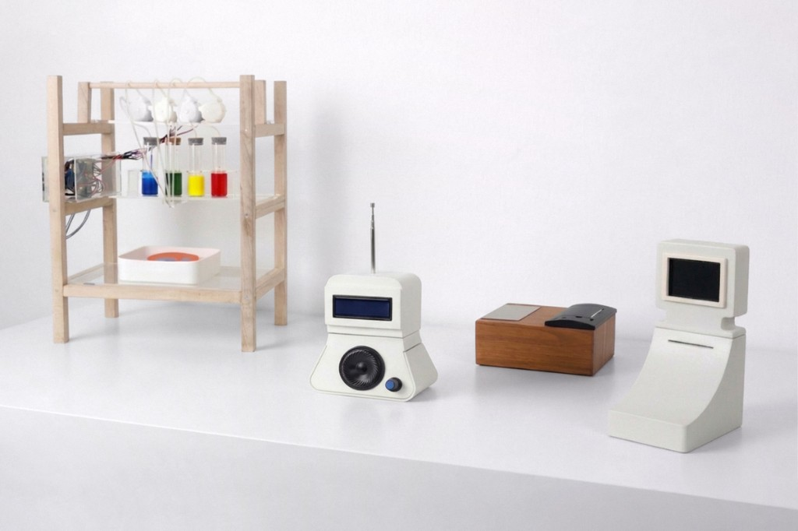
Mind in Motion, 2025 -
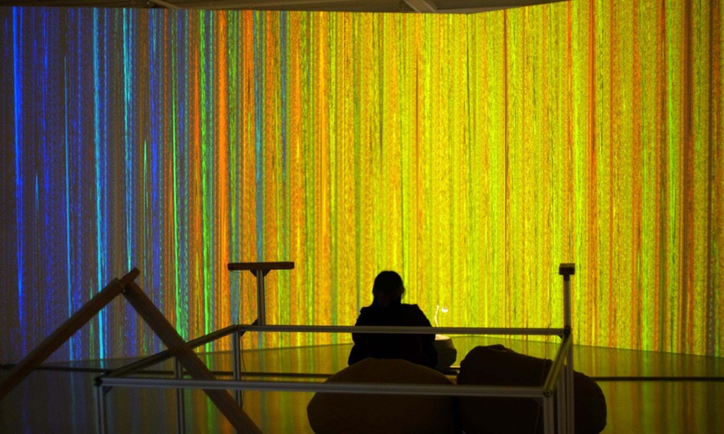
Stone, 2024 -
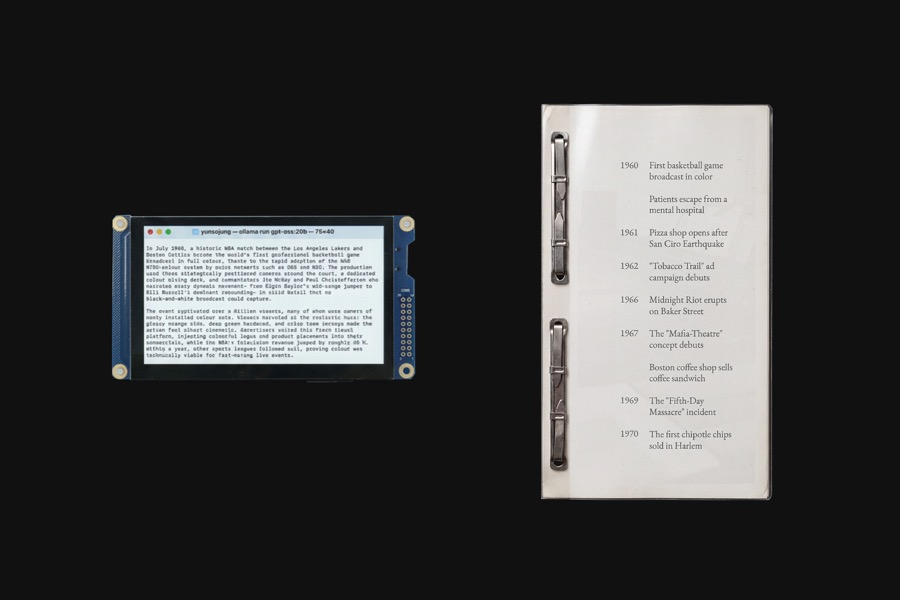
Dream Journal, 2025
Other work takes breathing, pulse, and facial expression as input. It also includes audiovisual pieces made with TouchDesigner and Strudel, interactive work made with MediaPipe, installations, generative typography, and more.
Other work uses breathing, pulse, and facial expression, plus TouchDesigner, Strudel, MediaPipe, installations, and generative typography.
-
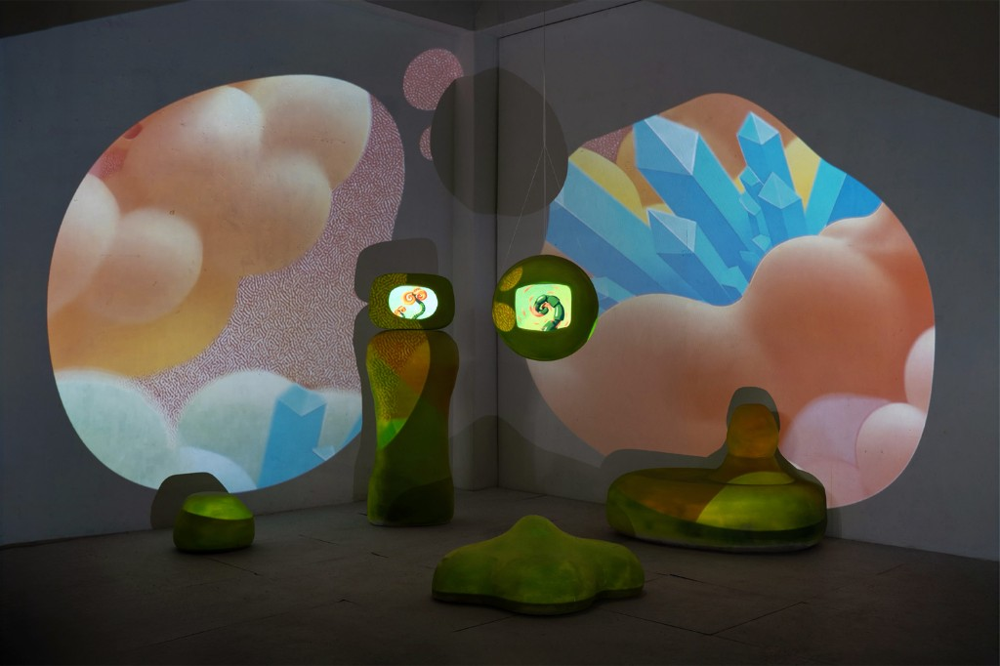
Archives Imagined, 2025 -
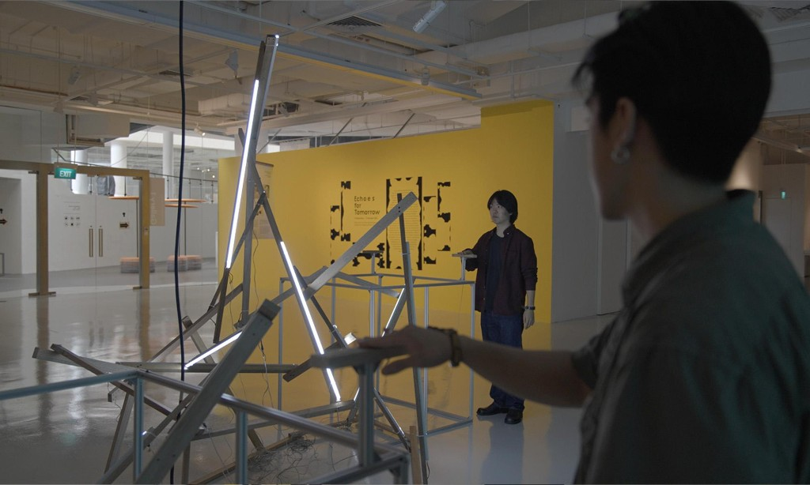
Echoes for Tomorrow, 2024 -
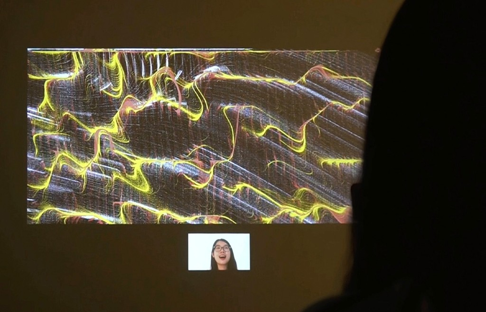
Untitled, 2023
Work I wish I had made
She is not a fan of complexity for its own sake, and prefers work with clear parameters and limitations.
Some examples include: 1) Latent Chair by Jiwon Jang, which reconstructs how an AI perceives a chair;[4] 2) Stranger Visions by Heather Dewey-Hagborg, which turns DNA left behind by strangers into portraits of their faces;[5] and 3) Cumulus, which watches clouds cross the Mexico–United States border and is a lesson in contextualisation.[6]
She prefers work with clear parameters. Latent Chair by Jiwon Jang rebuilds how an AI sees a chair.[4] Stranger Visions by Heather Dewey-Hagborg turns strangers' DNA into faces.[5] Cumulus watches clouds cross the Mexico–United States border.[6]
-
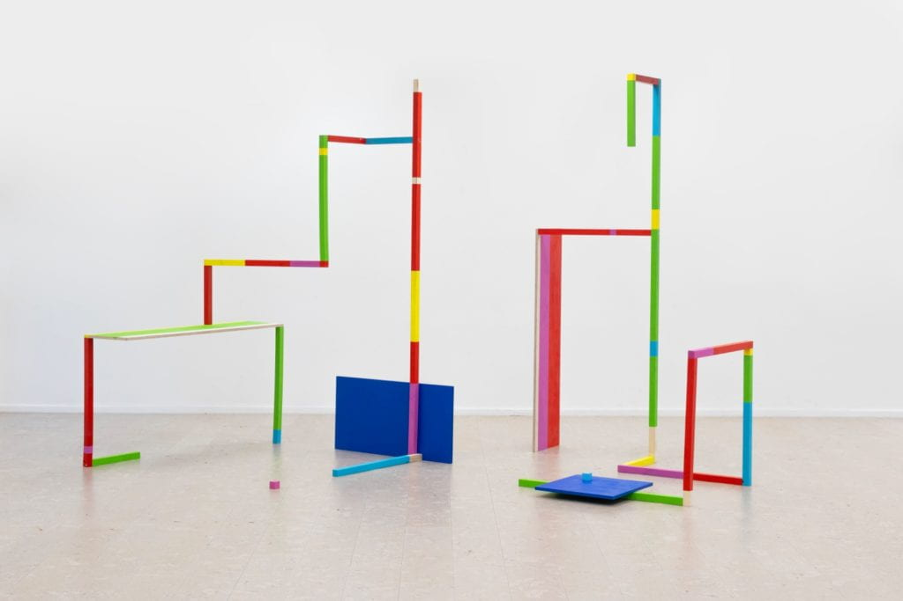
Latent Chair, 2024 -
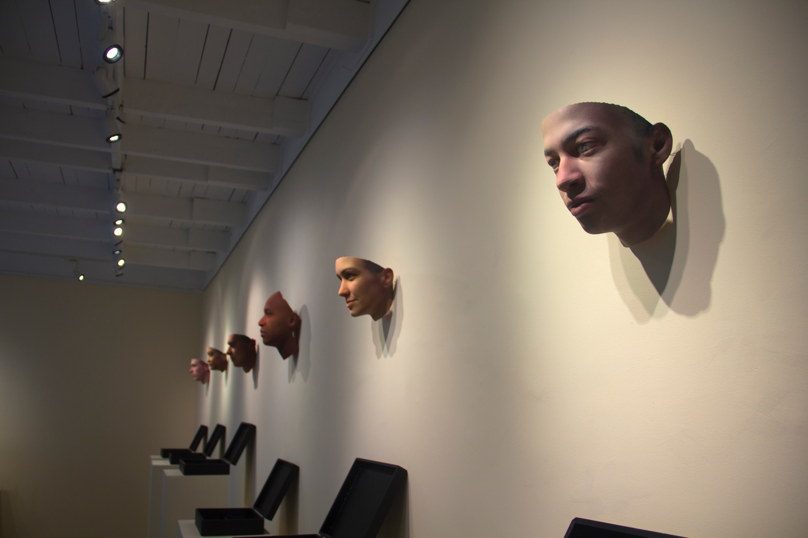
Stranger Visions, 2012–2013 -
Cumulus, 2022–2025
In terms of the design and presentation, No Bird by Ujoo and Heeyoung Lim, Labor by Paul Vanouse, and Stelarc suggest the physical installations she hopes to make.
No Bird, Labor, and Stelarc suggest the installations she hopes to make.
-
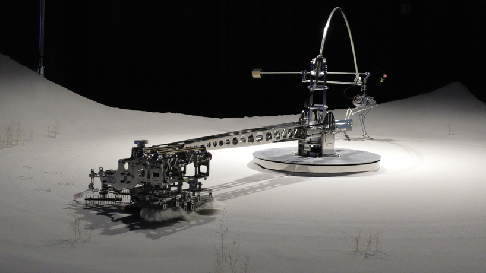
No Bird, 2025 -
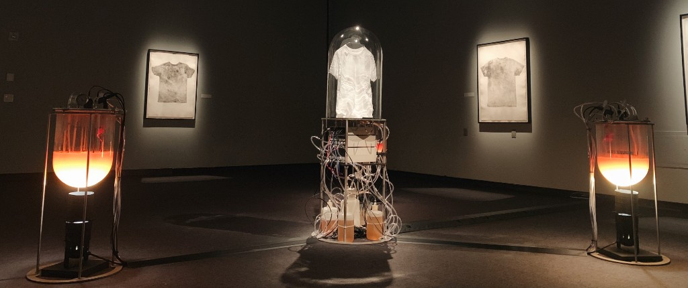
Labor, 2019 -
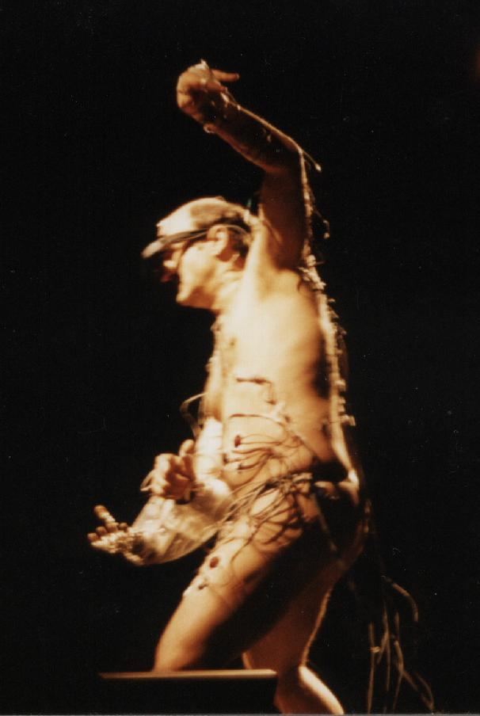
Stelarc
Things outside my work
Her first interest is the self: how people see themselves and project themselves onto the world. Some specific topics include dreams, the mirror stage, personality tests, fortune-telling, palm reading, physiognomy and Saju.
Her second is seemingly trivial things, such as documenting the placement of incense burners, or the different ways locals eat the same dish from their cuisine.
Some other interests and hobbies include western cartoons, indie games, Brian Eno, video calling her cats, drawing, speed cubing, building with the ESP32, and many more.
First, the self: dreams, the mirror stage, personality tests, fortune-telling, palm reading, physiognomy, and Saju. Second, seemingly trivial things, such as incense burners and ways of eating the same dish. Also western cartoons, indie games, Brian Eno, video calling her cats, drawing, speed cubing, and the ESP32.
-
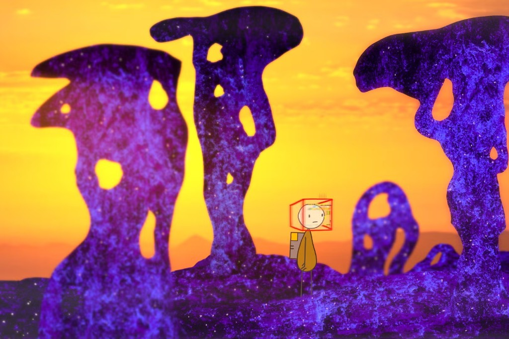
Don Hertzfeldt -
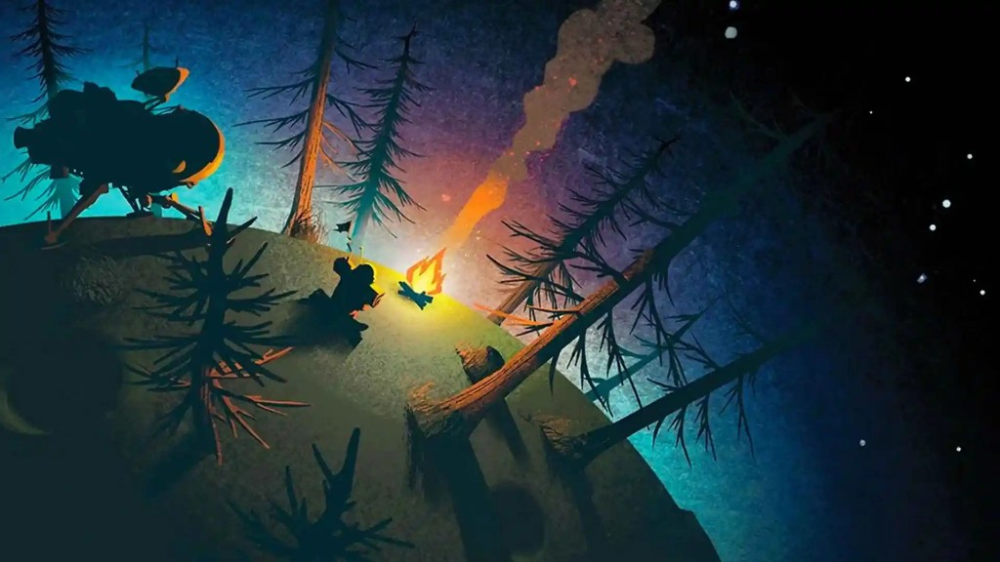
Outer Wilds -
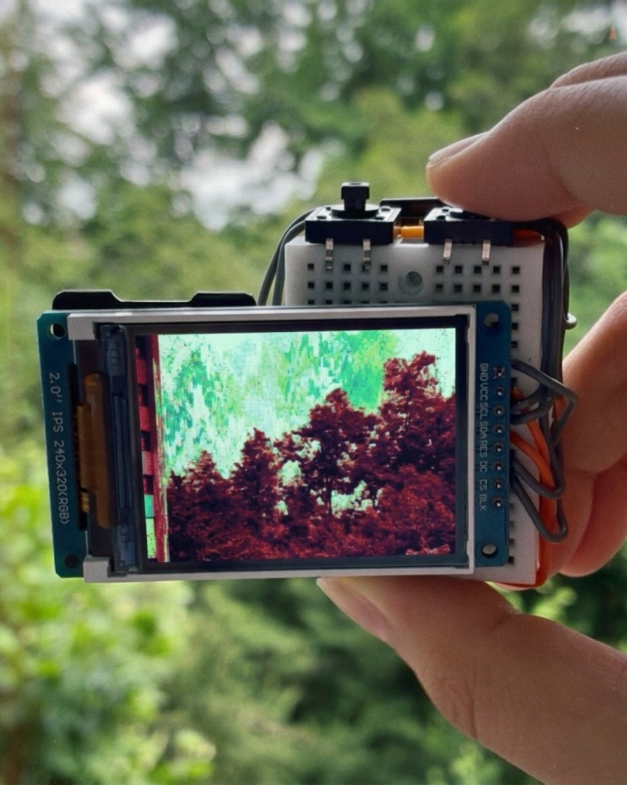
ESP32 Camera
Friends
References
- Jung, Yunso (2025). Mind in Motion. jungyunso.com. ↑
- Jung, Yunso (2024). Stone. jungyunso.com. ↑
- Jung, Yunso (2025). Dream Journal. jungyunso.com. ↑
- Jang, Jiwon (2024). The Latent Chair. Royal College of Art. 2024.rca.ac.uk. ↑
- Dewey-Hagborg, Heather. Stranger Visions. deweyhagborg.com. ↑
- MORAKANA. Cumulus. morakana.com. ↑